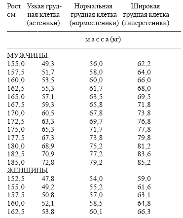
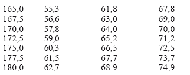
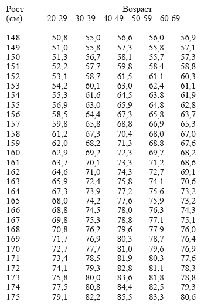
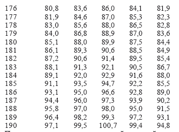
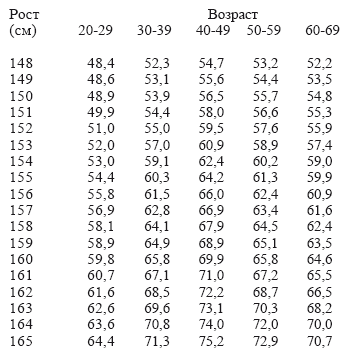
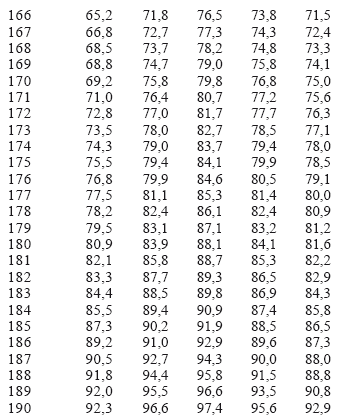

Питание при полноте, ожирении

Причины, приводящие к полноте или ожирению, различны. Одни становятся тучными из-за перекармливания в детстве, у других полнота обусловлена наследственностью. Женщины полнеют во время беременности и при неправильной организации питания в этот период могут остаться полными и после родов. С наступлением климакса снижается интенсивность обменных процессов, что при избыточном питании также приводит к полноте. По данным института питания, ожирение страдает каждая пятая женщина, причем полных женщин в 3,5 раза больше, чем полных мужчин. Ожирение следует рассматривать как заболевание; излишняя полнота неблагоприятно сказывается на работе сердца и сосудов, поражает печень, вызывает патологические изменения в суставах и позвоночнике, приводит к диабету и другим болезням.
Установлено также, что в 70 % случаев к ожирению приводит невоздержанность в еде, в результате чего нарушается динамическое равновесие между количеством поступающей энергии и энергозаратами организма. Само собой разумеется, что при желании похудеть (а такое желание непременно должно возникнуть, так как излишняя полнота и хорошее здоровье несовместимы), необходимо снижать энергетическую ценность рациона и увеличивать энергозатраты организма за счет физической нагрузки. Этот старый, но проверенный метод дает самые положительные результаты. Однако в последнее время многие, особенно женщины, предпочтение отдают различного рода диетам английской, жокейской, косметической, капустной и т. п., которые дают эффект резкого похудения. Некоторые устраивают голодные дни.
Худеть быстро не следует. Резкая потеря массы тела отрицательно сказывается на внешности: кожа теряет эластичность, гладкость, появляются морщины, обвисает подбородок.
Становится модным, увы, и голодание. Конечно, метод лечения голодом существует. Осуществляется он строго под контролем врача. И все-таки научной теории о действии полного голода нет. Исследованиями установлено лишь, что при голодании имеет место повышенный распад белков в организме. Отмечены также другие серьезные нарушения. Так, в крови уменьшается содержание холестерина и значительно понижается уровень сахара и, наоборот, повышается уровень молочной и мочевой кислот, падает содержание кальция, калия, магния. Может развиться гипотония, аритмия сердца, малокровие.
При более длительном голодании может остановиться рост волос.
Популяризаторы лечения ожирения голодом призывают голодать не только один раз в неделю или два-три дня подряд раз в месяц, они советуют (американский врач Поль Брегг, например) устраивать еще два голодания в год продолжительностью по две недели каждая.
Однако ко всему сказанному о голодании следует добавить, что в литературе описаны смертельные исходы при лечении голодом в результате аритмий и молочнокислого ацидоза (повышенного содержания молочной кислоты в крови).
Даже исходя из результатов отдельных исследований ясно, что голодание не есть панацея, а самолечение голодом не только вредно, но даже опасно. Нельзя добиваться подобны методом снижения массы тела. Гораздо более надежный способ – систематически ограничивать себя в еде, выработать привычку вставать из-за стола с чувством, что можно еще что-нибудь съесть. Надо постоянно следить за тем, чтобы не превысить калорийность рациона, добиваться, чтобы энергия, поступающая в организм с пищей, соответствовала энергозатратам. Приготавливая пищу, надо помнить золотое правило кулинарии – вкусно, полезно, малокалорийно!
Полноценность и высокое качество питания достигаются за счет широкого использования разнообразных продуктов. Надо только, чтобы их количество было правильно дозировано. Важно также приучить себя к порядку в еде. Сейчас во всем мире принят как наиболее приемлемый четырехразовый режим питания (прием пищи – через 4–5 часов). При таком промежутке времени переваривание пищи в основном заканчивается и вновь появляется аппетит. При этом исключается перегрузка желудка, прекращаются головные боли.
Особенно вредны излишества в еде. Одновременно с полнотой у многих людей понижается работоспособность, быстро наступает утомление, возникают различные недомогания и болезни. Установлено, что если ежедневно съедать лишний кусок хлеба в 100 г, то при склонности к полноте за год можно прибавить 7 кг. К сожалению, привычка плотно есть у многих складывается с детства, а начинается все с уговоров родителей. Родительская любовь в этом случае оборачивается страшным злом. Дети становятся «хорошими едоками» и остаются ими на всю жизнь.
Хороший способ борьбы с полнотой – частый прием небольших порций пищи: до 5–6 раз в сутки регулярно, в определенные часы. Причем пищи малокалорийной. Необходимо исключить из меню блюда, богатые углеводами: мучные, кондитерские изделия, сладости, варенье, каши, резко ограничить картофель (из всех овощей он содержит наибольшее количество углеводов), сократить употребление сахара до двух кусков в день. Если в первое время будет тяжело отказаться от сладостей, можно съесть 12 карамельки. Хлеб в рационе ограничивают до 100–150 г в день. А вот овощи – свежие помидоры, огурцы, редис, кабачки, свежую белокочанную и цветную капусту, кислые фрукты и ягоды – можно есть без ограничения. Они малокалорийны и быстро вызывают чувство насыщения. Овощи едят сырыми. В сырых овощах и фруктах содержится тартроновая кислота, препятствующая превращению в организме углеводов в жиры. В винегреты, салаты надо добавлять 2–3 столовые ложки растительного масла.
Мясо и рыбу при ожирении лучше потреблять вареными. Все соленые и острые блюда, закуски, приправы, возбуждающие аппетит и вызывающие жажду, исключаются полностью. В организме тучного человека кроме лишнего жира много и лишней жидкости, за счет которой еще более увеличивается масса тела. Поэтому напитки и воду необходимо сократить до 1–1,2 л в день. Пищу принимают 5–6 раз вдень. Это снижает аппетит. Ужинают не позднее 19 часов, но если голод мешает уснуть, можно перед сном съесть яблоко или выпить стакан кефира. Такой режим питания необходимо соблюдать год-полтора, пока не перестроится обмен веществ.
Разумеется строгий контроль за потреблением пищи необходимо сочетать с систематическим наблюдением за массой. Нормальная масса тела – один из важнейших показателей здоровья. Нужно постепенно добиваться ее снижения в среднем на 1–2 кг в неделю. Если же масса не снижается, значит, одной малокалорийной диеты недостаточно и надо провести разгрузочные дни. Они способствуют перестройке, как бы «встряске» обмена веществ, мобилизации жира из депо.
Их лучше проводить в свободные от работы дни – один, максимум два раза в неделю. Надо помнить, что разгрузочные дни отличаются односторонностью и нарушают принцип сбалансированности питания.
Приводим примерный набор продуктов для разгрузочных дней. Прием пищи 5–6 раз в день.
Мясной день.
360 г нежирной говядины с капустой, салатом или винегретом, 2 стакана кофе с молоком (с ксилитом или сорбитом), 2 стакана настоя шиповника.
Творожный день.
500 г обезжиренного творога и 60 г сметаны, 2 стакана кофе с молоком без сахара.
Молочный день.
6 стаканов молока или кефира, 50 г сухарей, 2 стакана кофе с молоком без сахара или чая (с ксилитом или сорбитом).
Яблочно-овощной день.
1,5 кг свежих яблок или сырых овощей (огурцы, капуста, морковь, арбузы), 2 стакана кофе с молоком или чая без сахара.
Картофельный день.
2 кг картофеля «в мундире», сваренного на пару или в воде. Это количество делят на три или четыре дневных приема. Диету следует чередовать так: четыре дня – картофель, две недели – нормальное меню, разумеется, не перегруженное, затем опять картофель.
Всем, пользующимся подобными диетами, надо помнить, что при тяжелых осложнениях, в частности со стороны сердечно-сосудистой системы (выраженная недостаточность кровообращения, состояние после инфаркта миокарда и др.), перевод на разгрузочные дни должен производиться крайне осторожно или совсем не применяться.
При соблюдении диеты важна твердая последовательность и целеустремленность. Только тогда успех гарантирован. Конечно, довольно трудно за короткое время ликвидировать запасы, которые накапливались годами. Даже точное соблюдение диеты не дает полного эффекта без увеличения энергозатрат организма. Меньше есть и больше двигаться – таково главное требование к тем, кто хочет похудеть.
Следует взять за правило хотя бы часть пути на работу или домой с работы идти пешком, регулярно делать утреннюю зарядку, выполнять специальные упражнения для мышц живота и бедер. На это потребуется и время, и терпение, но все окупится здоровье, подвижностью.
Большое значение имеет лечебная физкультура. Физические упражнения повышают окислительные процессы в организме за счет усиления газообмена, улучшают секреторную функцию различных органов и способствуют более энергичному выделению из организма продуктов обмена. Весьма эффективны гимнастика, ходьба, ближний туризм, волейбол, плавание, гребля, лыжи, коньки, велосипед. Рекомендуются солнечные и воздушные ванны, обтирания, купания, душ. Они благотворно действуют на сердечно-сосудистую и нервную системы, органы пищеварения, улучшая их функцию и закаливая организм. Полезен и массаж.
При ожирении III и IV степени показано пребывание на курорте, где может быть обеспечено комплексное лечение, – физические нагрузки, диетотерапия, врачебное наблюдение. Если ожирение сочетается с сердечно-сосудистыми заболеваниями, то показаны курорты Кисловодска. Нарзанные ванны, длительные (дозированные) прогулки по гористой местности в сочетании с лечебной диетой дают хорошие результаты.
Но лучше всего предупреждать ожирение. Главное в профилактике – правильная организация питания, занятия физическими упражнениями, соблюдение возрастной гигиены.
Что касается питания при ожирении, то надо еще раз подчеркнуть, что оно должно быть дробным, со значительным ограничением калорийности за счет углеводов, жира, жидкости и поваренной соли.
Диета должна отличаться повышенным содержанием калия. Для обогащения организма калием употребляют несладкие фрукты. Тучным людям с сердечно-сосудистой недостаточностью ограничение калорийности необходимо проводить постепенно.
Набор продуктов на день (в граммах)
Мясо говядина – 200, рыба (треска или хек) – 100, яйцо – 1 шт., молоко (кефир) – 500, картофель – 100, овощи (кроме картофеля) 150, фрукты (кроме винограда) —300, сухофрукты – 20, мука пшеничная – 10, горошек зеленый – 20, масло растительное – 10, масло сливочное – 5, соль – 3–4, чай – 1, кофе – 3.
Химический состав (в граммах): белки – 89,29; жиры – 45,85; углеводы – 104,24; калории – 1200.
ПРИМЕРНОЕ МЕНЮ НА НЕДЕЛЮ
Количество продуктов приводится в граммах
ПОНЕДЕЛЬНИК
Первый завтрак. Яйцо всмятку – 1 шт., кефир—250.
Второй завтрак. Мясо отварное (говядина 11 категории) – 100, горошек зеленый – 20, кофе (кофе – 3, вода – 200), яблоки – 100.
Обед. Суп картофельный вегетарианский (картофель – 50, зелень 3, мука пшеничная 11 сорта – 10, масло сливочное – 5, отвар овощной – 150), мясо отварное (говядина) – 150; огурцы свежие – 50; компот из сухофруктов (сухофрукты – 20, вода – 200).
Полдник. Яблоки свежие – 200 г.
Ужин. Рыба отварная (треска) – 100; картофель отварной с растительным маслом (масло растительное – 5, картофель – 50); салат из свежей капусты с соком лимона и растительным маслом (капуста – 100, сок лимона – 5, масло растительное – 5).
На ночь. Кефир – 250.
ВТОРНИК
Первый завтрак. Мясо отварное (говядина 11 категории) – 100; кефир – 250. Второй завтрак. Яйцо всмятку – 1 шт.; кофе без сахара (кофе – 3, вода—200); яблоки – 100.
Обед. Борщ вегетарианский (картофель – 25, капуста —25, свекла 40, морковь – 12, зелень – 3, лук репчатый – 5, томат—паста – 5, отвар овощной – 150); бефстроганов из отварного мяса (говядина 11 категории – 100, молоко – 50, масло сливочное – 5, мука пшеничная – 5, томат—паста – 5, зелень – 5); картофель отварной (картофель – 75, масло растительное – 5); компот из сухофруктов (сухофрукты – 20, вода – 200).
Полдник. Яблоки свежие – 200.Ужин. Курица отварная (мясо куриное – 100, коренья белые – 5); горошек зеленый – 20.На ночь. Кефир – 200 г.
СРЕДА
Первый завтрак. Мясо отварное – 100; горошек зеленый – 20; кефир – 250.
Второй завтрак. Суфле морковное паровое (морковь – 75, молоко 30, яйцо – 1/2 шт., масло сливочное – 5, крупа манная – 5, вода 25); яблоки – 150, кофе (кофе – 3, вода – 200).
Обед. Щи свежие вегетарианские (картофель – 25, капуста – 50, морковь – 12, зелень – 3, коренья белые – 7, помидоры – 10, лук репчатый – 3, масло растительное – 3, отвар овощной 150); рыба жареная (треска – 150, мука пшеничная – 5, масло растительное 3); картофель – 75; компот из сухофруктов без сахара (сухофрукты 20, вода – 200).
Полдник. Яблоки – 200.
Ужин. Мясо отварное – 100; чай с молоком без сахара (чай – 1, молоко – 50, вода – 150). На ночь. Кефир – 200.
ЧЕТВЕРГ
Первый завтрак. Яйцо всмятку – 1 шт., кефир—250 г.
Второй завтрак. Мясо отварное (говядина 11 категории) – 100; горошек зеленый – 20; кофе без сахара (кофе – 3, вода – 200).
Обед. Суп картофельный вегетарианский; мясо отварное (говядина 11 категории) – 100; огурцы свежие – 50; компот из сухофруктов (сухофрукты – 20, вода – 200).
Полдник. Яблоки – 200.
Ужин. Рыба отварная (треска или хек) – 200; картофель отварной 50; салат из свежей капусты с соком лимона и растительным маслом (капуста – 100, сок лимона – 5, масло растительное – 5).
На ночь. Кефир – 250.
ПЯТНИЦА
Первый завтрак. Рыба заливная (хек или треска – 200, желатин – 3, петрушка – 5, морковь – 5, бульон – 100); яйцо всмятку – 2 шт. Второй завтрак. Кефир – 250; яблоки – 100.
Обед. Суп из сборных овощей, мелко шинкованных (морковь – 25, картофель – 50, кабачки – 40, горошек зеленый – 20, зелень – 5, бульон мясной или овощной – 150, масло сливочное – 5); рагу из мяса с овощами (говядина 11 категории – 100, картофель – 50, морковь – 50, молоко – 50, томат—паста – 5, мука пшеничная – 5, зелень – 5); компот из сухофруктов без сахара (сухофрукты – 20, вода – 200).
Полдник. Яблоки – 200.
Ужин. Яйцо всмятку – 1 шт.
На ночь. Кефир или простокваша – 250.
СУББОТА
Первый завтрак. Котлеты рыбные паровые (филе рыбы – 200, хлеб пшеничный – 10); яйцо всмятку – 1 шт.; кофе без сахара (кофе – 3, вода – 200).
Второй завтрак. Молоко цельное – 200.
Обед. Суп перловый разваренный с морковью (крупа перловая – 20, морковь – 50, масло сливочное – 5, бульон мясной – 150); бефстроганов из отварного мяса (говядина 11 категории – 100, молоко 50, мука – 5, томат—паста – 5, зелень – 5, свекла – 50); салат из квашеной капусты (капуста – 50, лук – 5, масло растительное – 5); компот из сухофруктов без сахара (сухофрукты – 20, вода – 200).
Полдник. Яблоки или ягоды – 200.
Ужин. Мясо отварное (говядина 11 категории) – 50; яйцо всмятку – 1
На ночь. Чай с молоком без сахара. На ночь. Кефир или простокваша – 250.
ВОСКРЕСЕНЬЕ
Первый завтрак. Рыбаотварная (треска или хек)
– 100; картофель отварной (картофель – 50, растительное масло – 5); салат из свежей капусты (капуста
– 50, сок лимона – 5, масло растительное – 5); кофе без сахара (кофе – 3, вода – 200).
Второй завтрак. Кефир – 250.
Обед. Суп картофельный вегетарианский (картофель
– 50, зелень 3, мука пшеничная – 10, масло сливочное – 5, отвар овощной 150); курица отварная (мясо куриное – 100); огурцы свежие – 100, компот из сухоруктов без сахара (сухофрукты – 20, вода – 200).
Полдник. Яблоки или ягоды – 200; отвар шиповника (шиповник – 20, вода – 200).
Ужин. Мясо отварное (говядина 11 категории) – 100; горошек зеленый – 20; яйцо всмятку – 1 шт.
На ночь. Кефир или простокваша – 250.
Разгрузочные диеты – это диеты, предназначенные для повышения эффективности основных лечебных диет, для уменьшения излишней массы тела, для обеспечения и улучшения функций пораженных органов и систем, для нормального обмена веществ. Применяются при заболевании почек, печени и желчных путей, ожирении, подагре, токсикозах беременности, мочекаменной болезни, сахарном диабете, острых заболеваниях желудка и кишечника в первые дни лечения, при заболеваниях сердечно-сосудистой системы.
По преобладанию в разгрузочных диетах пищевых веществ их делят на белковые (творожные, мясные, рыбные), углеводные (сахарные, фруктовые, овощные, рисово-фруктовые) и жировые (сметана, сливки); по набору пищевых продуктов – на вегетарианские, сахарные, мясные и рыбные, жидкостные, комбинированные. Разгрузочные диеты назначают на 1–2 дня, как правило, не чаще 1–3 раза в неделю с учетом характера болезни и их переносимости.
Чайная диета
При остром гастрите и энтероколите, обострении хронических энтероколитов с поносами – 7 раз в день по стакану чая с 10 г сахара.
Сахарная диета
При остро нефрите, недостаточности почек и печени, реже – при остром гепатите и холецистите или их обострении – 5 раз в день по стакану чая с 30 г сахара.
Яблочная диета
При ожирении, гипертонической болезни, недостаточности кровообращения или почек, остром нефрите, болезнях сердечно-сосудистой системы можно добавить 50-100 г сахара. При хроническом энтероколите с поносами – 5 раз в день по 250–300 г спелых тертых яблок.
Диета из сухофруктов
При гипертонической болезни, недостаточности кровообращения, нефритах, болезнях печени и желчных путей – по 100 г размоченного чернослива или кураги либо прокипяченного изюма 5 раз в день.
Арбузная диета
При гипертонической болезни, недостаточности кровообращения или почек, болезнях печени и желчных путей – 6 раз в день по стакану сладкого компота, 2 раза вместе со сладкой рисовой кашей, сваренной на воде, или 240 г сухих фруктов, 50 г риса, 120 г сахара.
Картофельная диета
При нефритах, гипертонической болезни, недостаточности кровообращения – по 300 г отварного в кожуре или печеного картофеля без соли 5 раз в день.
Огуречная диета
При ожирении, гипертонической болезни и сахарном диабете с ожирением, нефритах, болезнях печени и желчных путей, подагре, мочекаменной болезни без фосфатурии – по 300 г свежих огурцов без соли 5 раз в день.
Салатная диета
При ожирении, атеросклерозе, гипертонической болезни и сахарном диабете с ожирением, нефритах, болезнях печени и желчных путей, подагре, мочекаменной болезни без фосфатурии – свежие сырые овощи и фрукты, их комбинации 5 раз в день по 250–300 г без соли с добавлением растительного масла или сметаны.
Молочная (кефирная) диета
При ожирении, атеросклерозе, гипертонической болезни и сахарном диабете с ожирением, недостаточности кровообращения, нефритах, болезнях печени и желчных путей, подагре, мочекаменной болезни без фосфатурии – по 200–250 г молока, кефира, простокваши (можно пониженной жирности) 6 раз в день. Сметанная (жировая) диета
При ожирении, реже – при сахарном диабете с ожирением, – по 80 г сметаны 20–30 %-ной жирности 5 раз в день и 1–2 стакана отвара шиповника.
Творожная диета
При ожирении, сахарном диабете, атеросклероза, гипертонической болезни с ожирением, недостаточности кровообращения, болезнях печени и желчных путей – по 100 г творога 9 %-ной жирности или нежирного 5 раз в день. Кроме того, 2 стакана чая, 1 стакан отвара шиповника, 2 стакана нежирного кефира (всего 1 л жидкости). Вариантом является творожно-кефирная (молочная) диета – по 60 г творога 9 %-ной жирности и 1 стакану кефира (молока) 5 раз в день.
Мясная (рыбная) диета
При ожирении, атеросклерозе и сахарном диабете с ожирением – по 80 г нежирного отварного мяса или отварной рыбы 5 раз в день; по 100–150 г овощей (капуста, морковь, огурцы, томаты) 5 раз в день, 1–2 стакана чая без сахара.
Овсяная диета
При ожирении, сахарном диабете с явлениями метаболического ациздоза, атеросклерозе с ожирением – по 140 г овсяной каши на воде 5 раз в день; всего 700 г каши (200 г овсяной крупы); 1–2 стакана чая или отвара шиповника.
Соковая диета
При ожирении, сахарном диабете с ожирением, атеросклерозе, гипертонической болезни, болезнях почек, печени и желчных путей, подагре, мочекаменной болезни без фосфатурии – 600 мл сока овощей или фруктов, разбавленных 200 мл воды или 0,8 литра отвара шиповника 4 раза в день.
Принято различать 4 степени ожирения в зависимости от веса больного. 1-я степень – вес превышает нормальный на 10–29 %, 2-я на 30–49 %; 3-я на 50–99 %; 4-я на 100 % и более. При 1-й и 2-й степени ожирения трудоспособность и жизненная активность больных не нарушены. Вообще провести четкую границу между здоровым «упитанным» человеком и больным с начальной степенью ожирения во многих случаях трудно. Недаром французские исследователи полушутливо выделяют такие 3 степени ожирения: 1-я степень – когда окружающие завидуют, 2-я – когда они смеются и 3-я – когда они сочувствуют больному. При продолжающемся переедании и малоподвижном образе жизни одна стадия незаметно переходит в другую. Нарушение обмена веществ и возросшая нагрузка на кости и суставы при ожирении ведут к изменениям в опорно-двигательном аппарате, сопровождающимся болями, ограничением подвижности в опорных суставах нижней половины тела. При резко выраженном ожирении неизбежны нарастающие расстройства дыхания, приводящие к легочной и сердечной недостаточности: больные малоподвижны, синюшны, сонливы, отечны; постепенно они становятся глубокими инвалидами (так называемый синдром Пиквика).
Ожирение способствует развитию диабета, желчнокаменной болезни, атеросклероза, гипертензии, инфаркта миокарда и многих других заболеваний. Хирургические операции у больных ожирением протекают тяжелее. Доказано, что продолжительность жизни больных ожирением меньше средней продолжительности жизни.
Нередко в целях похудания больные меняют режим питания: едят всего 1–2 раза в день. Между тем специальные исследования показали, что при дробном питании (7 приемов пищи в день) потеря веса оказывается почти в 2 раза большей, чем при употреблении того же суточного рациона за 2 приема. Ежедневное соблюдение диеты в течении многих месяцев и лет – наиболее рациональный путь постепенного, а значит, безопасного снижения веса и избавления от ожирения.
Вес человека (масса тела человека) зависит в первую очередь от типа телосложения, пола и возраста; служит относительным показателем физического развития человека и состояния его здоровья. Вес человека является одним из тех показателей, за которым должен следить практически каждый человек. Поэтому, несмотря на то, что вес человека индивидуален, установлены определенные весовые нормативы, учитывающие возрастные, половые и другие особенности.
У взрослых людей вес тела подвержен индивидуальным изменениям.
При разработке нормативов веса взрослого здорового человека обычно в первую очередь учитывают тип сложения: астенический, нормостенический и гиперстенический. Астенику свойственны ходощавость, плоскогрудость, относительно слабое развитие мускулатуры. Нормостеническому сложению отвечают широкие плечи и грудь, сильно развитая мускулатура. Гиперстеник кряжист, склонен к полноте. В тех случаях, когда тип сложения выражен нечетко, можно воспользоваться формулой:
ВЕС В КИЛОГРАММАХ /РОСТ В ДЕЦИМЕТРАХ
Если частное от деления находится в пределах 2,83,1 то вес недостаточный, 3,2–4,3 – вес нормальный, а 4,4–5,3 – вес чрезмерный и можно говорить о тучности. Для определения величины нормального веса используются и другие расчеты. Так, по индексу Брока, нормальный вес взрослого человека должен быть равен длине тела (в см) без 100 условных единиц. Значительные отклонения веса от нормы в любую сторону одинаково опасны.
РЕКОМЕНДУЕМАЯ МАССА ТЕЛА
для мужчин и женщин в возрасте 25–30 лет


ПРЕДЕЛЬНО НОРМАЛЬНАЯ
масса тела (кг) в зависимости от роста и возраста при нормальном сложении у мужчин


Поправка на телосложение сширокой или узкой грудной клеткой составляет плюс-минус 6 кг.
ОПРЕДЕЛЕНИЕ ПРЕДЕЛЬНО НОРМАЛЬНОЙ
массы тела (кг) в зависимости от роста и возраста при нормальном сложении у женщин


Поправка на телосложение с широкой или узкой грудью составляет плюс-минус 6 кг
КАЛЕНДАРНЫЕ ПОСТЫ
Внутренними очистителями человеческого организма считаются календарные посты, которые поддерживают здоровый дух в здоровом теле.
Избавление от излишнего жира, улучшение обмена веществ, смена рациона питания, избавление от тысяч пищевых добавок, используемых в ежедневном рационе происходит с помощью соблюдения календарных постов.
Посты, установленные церковью
Великий пост, или Святая Четыредесятница – перед Пасхой. Продолжается семь недель: шесть недель сам пост и седьмая неделя Страстная – в воспоминание страданий Христа Спасителя.
Рождественский пост– перед праздником Рождества Христова. Он начинается с 14 ноября (27 ноября по новому стилю), со дня святого апостола Филиппа, поэтому иначе он называется «Филипповым постом».
Продолжается 40 дней.
Успенский пост– перед праздником Успенья Божьей Матери. Продолжается две недели – с 1 августа (14 августа по новому стилю) по 14 августа (27 августа по новому стилю) включительно.
Апостольский, или Петров пост– перед праздником святых апостолов Петра и Павла. Начинается через неделю после дня Святой Троицы и длится до 29 июня (12 июля по новому стилю). Его продолжительность зависит от того, раньше или позже бывает Пасха. Самая большая продолжительность – шесть недель. Самая меньшая – неделя с одним днем.
Однодневные посты
В Сочельник – день перед Рождеством Христовым: 24 декабря (6 января по новому стилю). Особо строгий пост. Не есть до появления первой звезды.
В Сочельник – день перед Крещением Господним: 6 января (19 января по новому стилю).
В день Усекновения главы св. Иоаанна Предтечи: 29 августа (11 сентября по новому стилю).
В день Воздвиженья Креста Господня, в воспоминание крестных страданий Иисуса Христа: 14 сентября (27 сентября по новому стилю).
Кроме того, постятся в среду и пятницу каждой недели. В среду – в воспоминание предательства Спасителя Иудой.